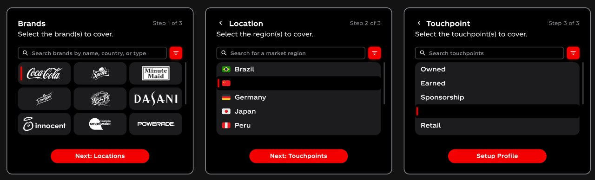
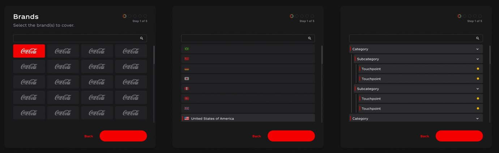
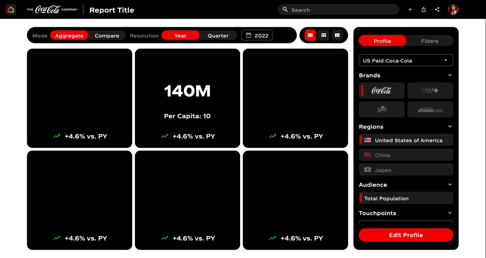
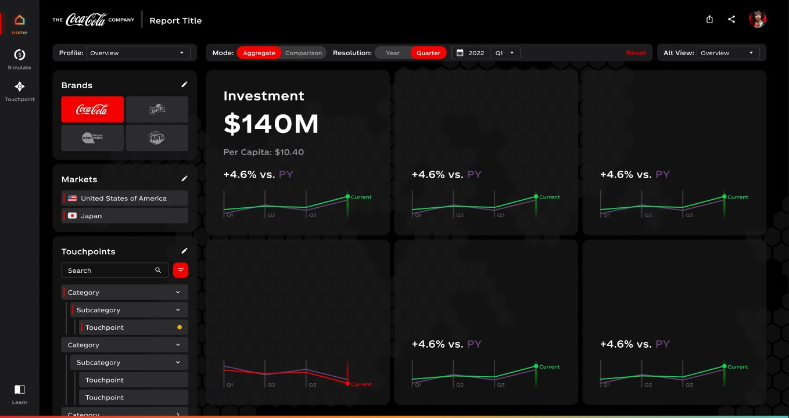
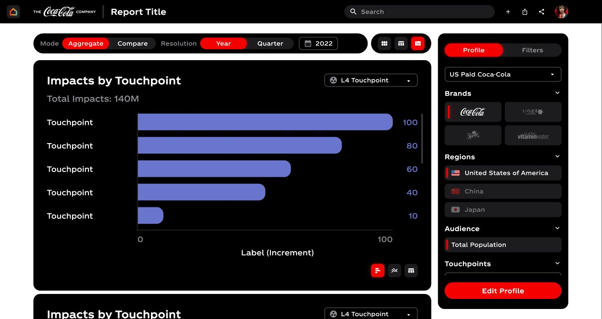
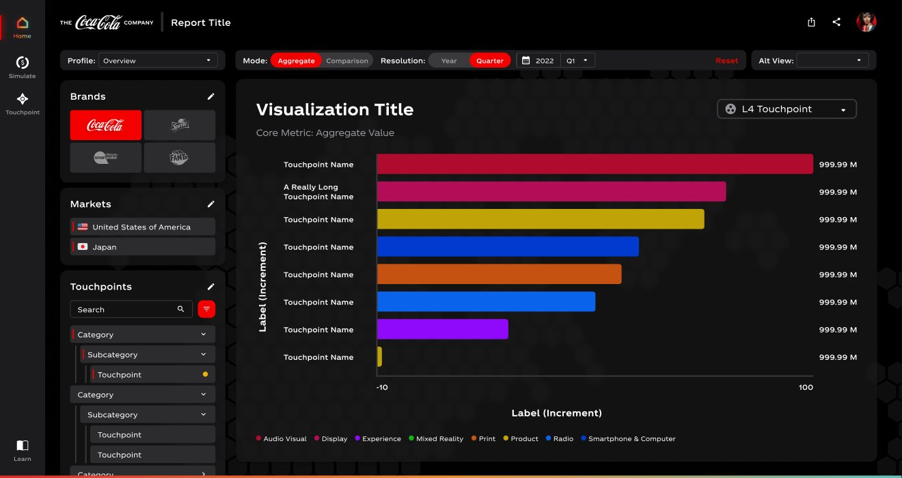
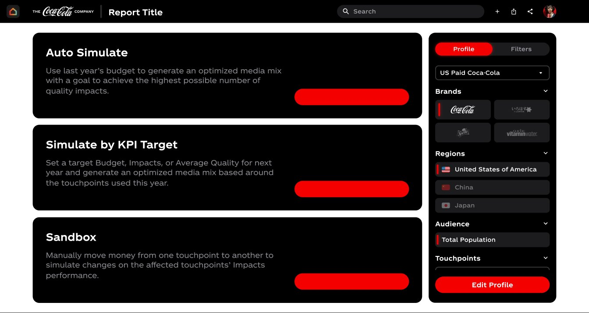
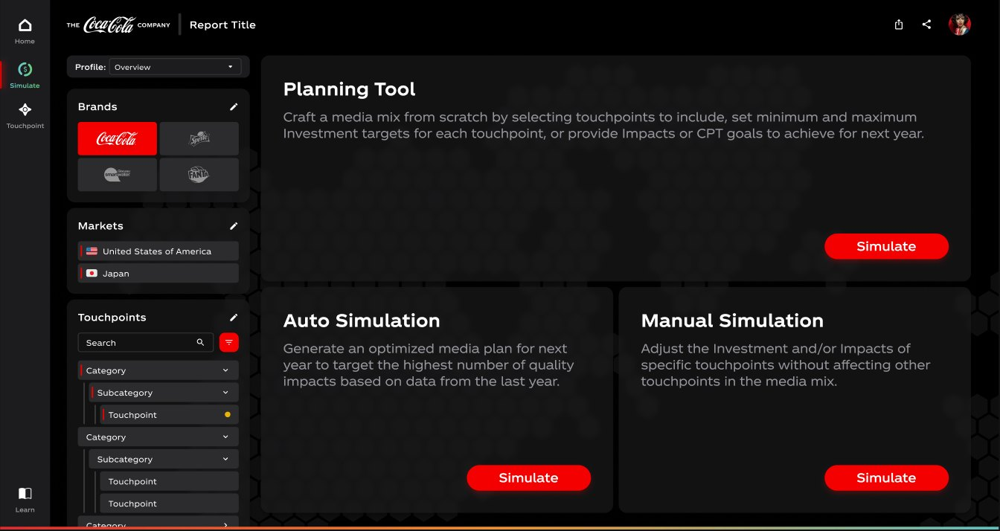
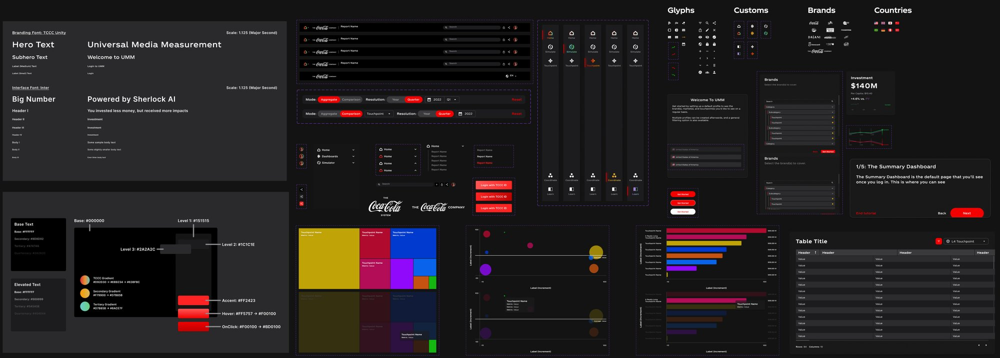

Onboarding was flat gray, reporting flipped to white. No visual continuity.
Product design · Case study 01
Coca-Cola UMM
Redesigning a marketing measurement dashboard. One dark system, filters that stay put, charts you can read.

01 Context
What is UMM?
See how every brand performs. Then spend better.
Unified Marketing Measurement lets Coca-Cola marketing teams see how every brand, market and touchpoint performs: investment, impacts, quality and efficiency.
Then they simulate how to spend better next year.
01Set up
Pick brands, markets and touchpoints to report on.
02Explore
Read KPIs and visual analytics across the media mix.
03Plan
Simulate budgets and optimise the next media plan.
02 The challenge
What held the old UI back.
Brands, markets and touchpoints sat behind an "Edit Profile" modal. Every re-scope lost context.
Plain checklists for dozens of markets and nested touchpoints.
The most important analytical cut wasn't visualised at all.
No clear legends, trends or deltas. Comparing was slow.
Simulation tools were buried and vaguely named ("Sandbox").
03 Approach
Five moves.
- 01Audit
Mapped every screen old → new and ranked issues by severity.
- 02System
One dark theme with a shared token set for colour, type and spacing.
- 03Restructure
Filters moved out of modals into a persistent left rail.
- 04Scale
Searchable, nested selectors for markets and touchpoints.
- 05Extend
Designed the missing states: touchpoint filter and the full planning suite.
Consistency, context and scalability before decoration.
04 Heuristic audit
Ranked by severity.
| Heuristic | Issue found | Severity | Resolution |
|---|---|---|---|
| Visual consistency | Light and dark themes mixed across flows | Critical | One dark design system, end to end |
| Efficiency of use | Re-scoping meant opening a modal | Critical | Persistent left-rail filters, always visible |
| Match to scale | Flat checklists for markets and touchpoints | High | Searchable, nested, multi-select selectors |
| Visibility | Touchpoint filter not surfaced | High | New touchpoint filter in the rail |
| Recognition | Charts lacked legends and deltas | Moderate | Legends, sparklines and PY deltas |
| Discoverability | Planning tools buried and unnamed | Moderate | A named Planning suite, front and centre |
05 Before / after
Drag to compare.
01Onboarding & setup

Before
AfterBefore
- Flat gray modal, cut off from the product
- Plain list: no search, no hierarchy
- Vague naming ("Location")
After
- World-map backdrop ties setup to the data
- Searchable, multi-select, scannable
- Clear naming and visible step progress
02The KPI summary dashboard


Before
- White theme broke from the rest of the product
- Profile overview stuck on the right
- No trend context on the numbers
After
- Consistent dark theme, premium feel
- Persistent left rail: re-scope without losing your place
- Sparklines and vs-PY deltas add instant context
03Data viz & the touchpoint filter


Before
- One muted colour across all bars
- No legend, hard to read categories
- No touchpoint cut at all
After
- Colour-coded categories and value labels
- Legend chips and a new touchpoint filter rail
- Same pattern reused across treemap, bar and bubble
04The planning suite


Before
- Vague names ("Sandbox") hid intent
- Tools sat alone, with no shared scope
- Key planning states never designed
After
- A clear suite: Manual, Auto and Planning Tool
- Same rail, theme and data table as reporting
- Designed the missing base and touchpoint-added states
06 Design system
One consistent language.

Type · colour · components · charts